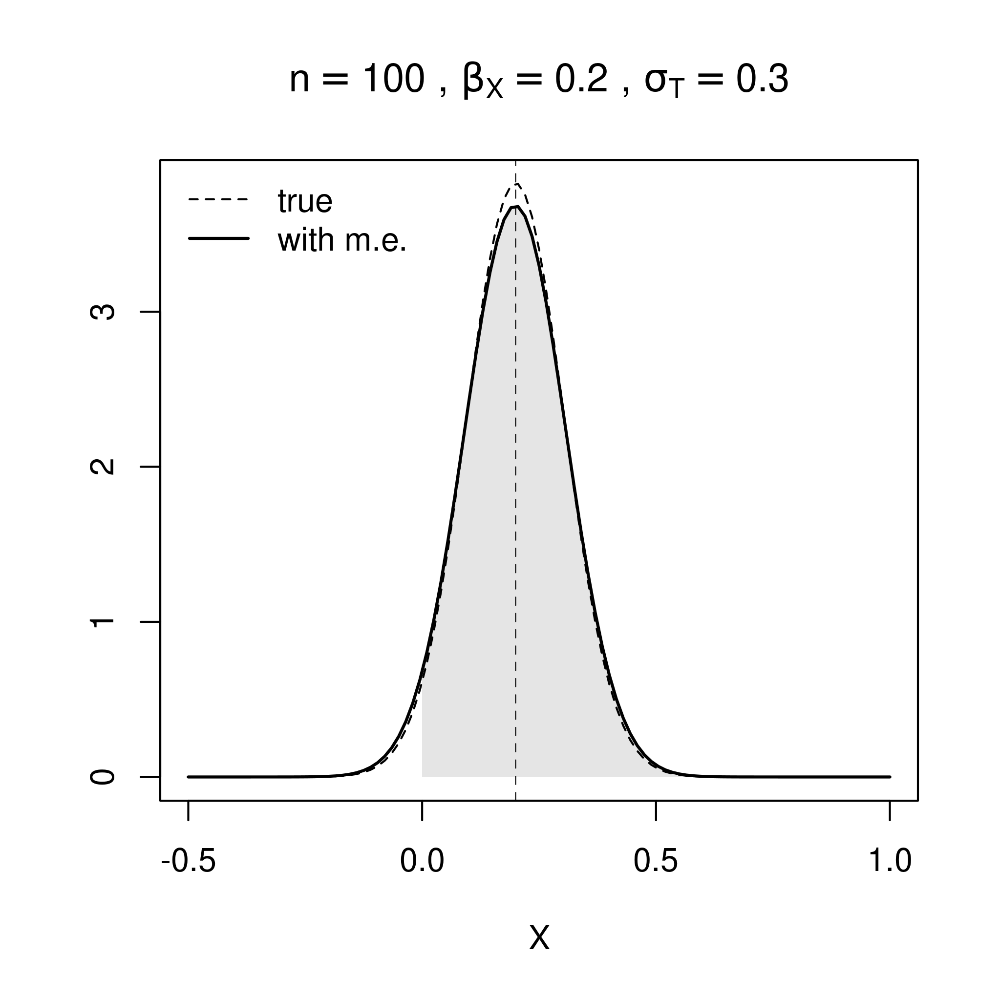
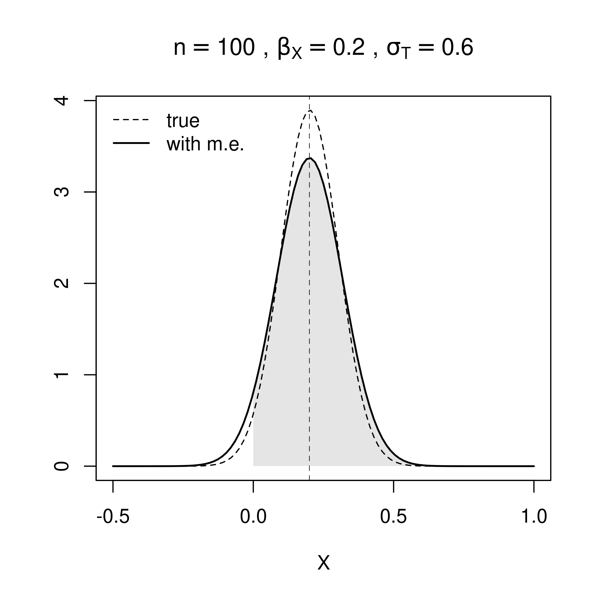

Let’s talk about Thurstone & Co.
![]()
University of Antwerp
University of Antwerp
University of Antwerp
2025-02-19
2. Some theory to remember

3.2 Measurement and hypothesis tests
But, what are the problems with this?



4.2 The sample-comparison model

\[ \begin{aligned} O_{RPUV} & := f_{C}(O^{sc}_{RPUV}, C) \\ O^{sc}_{RPUV} & := f_{S}(O^{cp}_{RPUV}, S_{RPUV}) \\ O^{cp}_{RPUV} & := f_{O}(D_{RPUV}) \\ D_{RPUV} & := f_{D}(T_{IA}, B_{JK}) \\ T_{IA} & := f_{T}(T_{I}, X_{IA}, e_{IA}) \\ T_{I} & := f_{T}(X_{I}, e_{I}) \\ B_{JK} & := f_{B}(B_{J}, Z_{JK}, e_{JK}) \\ B_{J} & := f_{B}(Z_{J}, e_{J}) \\ e_{IA} & \:\bot\:\{ e_{I}, e_{JK}, e_{J} \} \\ e_{I} & \:\bot\:\{ e_{JK}, e_{J} \} \\ e_{JK} & \:\bot\:e_{J} \end{aligned} \]
References
1.
Kohler U, Kreuter F, Stuart E (2019) Nonprobability sampling and causal analysis. Annual Review of Statistics and Its Application 6:149–172. https://doi.org/https://doi.org/10.1146/annurev-statistics-030718-104951
2.
Pollitt A (2012) Comparative judgement for assessment. International Journal of Technology and Design Education 22(2):157--170. https://doi.org/10.1007/s10798-011-9189-x
3.
Pollitt A (2012) The method of adaptive comparative judgement. Assessment in Education: Principles, Policy and Practice 19(3):281--300. https://doi.org/10.1080/0969594X.2012.665354
4.
van Daal T, Lesterhuis M, Coertjens L, Donche V, De Maeyer S (2016) Validity of comparative judgement to assess academic writing: Examining implications of its holistic character and building on a shared consensus. Assessment in Education: Principles, Policy & Practice 26(1):59–74. https://doi.org/10.1080/0969594X.2016.1253542
5.
Goossens M, De Maeyer S (2018) How to obtain efficient high reliabilities in assessing texts: Rubrics vs comparative judgement. In: Ras E, Guerrero Roldán A (eds) Technology enhanced assessment. Springer International Publishing, pp 13–25
6.
McElreath R (2020) Statistical rethinking: A bayesian course with examples in r and STAN. Chapman; Hall/CRC
7.
Zimmerman D (1994) A note on the influence of outliers on parametric and nonparametric tests. The Journal of General Psychology 121(4):391–401. https://doi.org/10.1080/00221309.1994.9921213
8.
Laming D (2004) Marking university examinations: Some lessons from psychophysics. Psychology Learning & Teaching 3(2):89–96. https://doi.org/10.2304/plat.2003.3.2.89
9.
10.
Lesterhuis M (2018) The validity of comparative judgement for assessing text quality: An assessor’s perspective. PhD thesis, University of Antwerp
11.
Coertjens L, Lesterhuis M, Verhavert S, Van Gasse R, De Maeyer S (2017) Teksten beoordelen met criterialijsten of via paarsgewijze vergelijking: Een afweging van betrouwbaarheid en tijdsinvestering. Pedagogische Studien 94:283–303
12.
Bouwer R, Lesterhuis M, De Smedt F, Van Keer H, De Maeyer S (2023) Comparative approaches to the assessment of writing: Reliability and validity of benchmark rating and comparative judgement. Journal of Writing Research 15(3):497–518. https://doi.org/10.17239/jowr-2024.15.03.03
13.
Pollitt A, Elliott G (2003) Finding a proper role for human judgement in the examination system.
14.
Casalicchio G, Tutz G, Schauberger G (2015) Subject-specific bradley–terry–luce models with implicit variable selection. Statistical Modelling 15(6):526–547. https://doi.org/10.1177/1471082X15571817
15.
Bramley T, Vitello S (2019) The effect of adaptivity on the reliability coefficient in adaptive comparative judgement. Assessment in Education: Principles, Policy and Practice 71(9):1–25. https://doi.org/10.1080/0969594X.2017.1418734
16.
Boonen N, Kloots H, Gillis S (2020) Rating the overall speech quality of hearing-impaired children by means of comparative judgements. Journal of Communication Disorders 83:1675–1687. https://doi.org/10.1016/j.jcomdis.2019.105969
17.
van Daal T, Lesterhuis M, Coertjens L, van de Kamp MT, Donche V, De Maeyer S (2017) The complexity of assessing student work using comparative judgment: The moderating role of decision accuracy. Frontiers in Education 2. https://doi.org/10.3389/feduc.2017.00044
18.
Jones I, Bisson M, Gilmore C, Inglis M (2019) Measuring conceptual understanding in randomised controlled trials: Can comparative judgement help? British Educational Research Journal 45(3):662–680. https://doi.org/10.1002/berj.3519
19.
Gijsen M, van Daal T, Lesterhuis M, Gijbels D, De Maeyer S (2021) The complexity of comparative judgments in assessing argumentative writing: An eye tracking study. Frontiers in Education 5. https://doi.org/10.3389/feduc.2020.582800
20.
Kline R (2023) Principles and practice of structural equation modeling. Guilford Press
21.
Hoyle R(eds) (2023) Handbook of structural equation modeling. Guilford Press
22.
Pearl J (2009) Causality: Models, reasoning and inference. Cambrige University Press
23.
Pearl J, Glymour M, Jewell N (2016) Causal inference in statistics: A primer. John Wiley & Sons, Inc.
24.
Gross J, Yellen J, Anderson M (2018) Graph theory and its applications. Chapman; Hall/CRC
25.
26.
Kelly K, Richardson M, Isaacs T (2022) Critiquing the rationales for using comparative judgement: A call for clarity. Assessment in Education: Principles, Policy & Practice 29(6):674–688. https://doi.org/10.1080/0969594X.2022.2147901
27.
Morgan S, Winship C (2014) Counterfactuals and causal inference: Methods and principles for social research, 2nd ed. Cambridge University Press